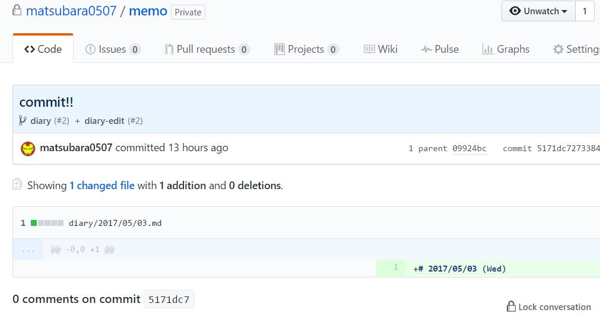

GitHub API を GAS でいい感じで叩くためのライブラリを作った (未完)
Google Apps Script で GitHub API を叩きたくなったが，ライブラリが見つからなかったので，作った。 といっても，現状は ワタシが必要だった API しか実装していない です． すいません．
- API ID :
MpVhtQfIUrL3OfsqY2BMtnIv0J4XZf0PJ - コード : https://github.com/matsubara0507/gasdump/tree/githubapi/GitHubAPI
いきさつ
GitHub で日記を書こうと思った． で，毎日，日付のファイル作るのだるいので，朝になったら自動で作ってくれるスクリプト書いて動かそうと考えた．
そんなのわざわざ GitHub API を使わなくても，git コマンド叩けば一発なんだが，スクリプトをホスティングする場所がない(無料で)！ しかし，GAS であればタダで毎日回せる！ ということで，GAS から GitHub API を叩いて，毎日，日記用のファイルを生成+コミットしてくれるスクリプトを書いた．
作る
前に，GAS コードを GitHub でバージョン管理したい．
バージョン管理
ググったらすごい良いのがあった．
本当にすごい便利．
ただ，一度 Diff がうまく取れなくなってしまって困った． 調べたら，ちゃんと Issue があった． ファイル名と関数名を一緒にするとだめらしい．
ファイルをコミットするスクリプト
最初は下記のサイトを参考にして GitHub API の認証を OAuth2 で行おうとした．
だが，ぜんぜんうまくいかず，APIトークンだけを発行するやり方にした． 最初からそれでよかったかな．
次に，公式の GitHub API ドキュメントとにらめっこしながら，ファイルをコミットするスクリプトを書いた． 下記のサイトが非常に役に立った．
「ファイルをコミットする」といっても実際には複数の処理に分かれているようだ(git-commit もそうなのかな？)．
- コミットしたいブランチの情報を取得(既存のブランチに紐づけないならいらない)
- blobオブジェクトを作成(ファイル単位のオブジェクト)
- treeオブジェクトを作成(ディレクトリ単位のオブジェクト)
- 差分をしっかりとりたいなら，前のコミットのtreeオブジェクトが必要
- commitオブジェクトを作成(treeオブジェクトをコミットに紐づける)
- ブランチに紐づける
という感じだ． なので，これらを実行する関数を作った．
function getBranch(branchName, baseUrl, prop) {
var response = UrlFetchApp.fetch(baseUrl + '/branches/' + branchName, {
headers: {
Authorization: 'token ' + prop.GITHUB_TOKEN
}
});
return JSON.parse(response);
}
function createBlob(content, baseUrl, prop) {
var data = { 'content': content, 'encoding': 'utf-8' };
var response = UrlFetchApp.fetch(baseUrl + '/git/blobs', {
headers: {
Authorization: 'token ' + prop.GITHUB_TOKEN
},
method: 'POST',
contentType: 'application/json',
payload: JSON.stringify(data)
});
return JSON.parse(response);
}全部書くと多くなるので2つだけ(そのときのコード)．
これを呼ぶ部分はこんな感じ．
function makeTodayDiary() {
var prop = PropertiesService.getScriptProperties().getProperties();
const username = prop.GITHUB_USERNAME;
const repo = prop.GITHUB_REPO;
const baseUrl = 'https://api.github.com/repos/' + username + '/' + repo
var branch = getBranch(prop.GITHUB_BRANCH, baseUrl, prop);
var pTree = getTree(branch['commit']['commit']['tree']['sha'], baseUrl, prop);
var blob = createBlob('testgas', baseUrl, prop);
var data = {
'tree': pTree['tree'].concat([{'path': 'testgas1.md','mode': '100644','type': 'blob','sha': blob['sha']}])
};
var tree = createTree(data, baseUrl, prop);
var commit = createCommit('commit!!', tree['sha'], branch['commit']['sha'], baseUrl, prop);
var result = updateReference(prop.GITHUB_BRANCH, commit['sha'], baseUrl, prop);
Logger.log(result);
}適当にテスト用のリポジトリを作って試したらいい感じに動いた．
タイムスタンプ
ちなみに，コミット時に必要となるタイムスタンプが意外と困った． コミットに使われるフォーマットは 2017-05-02T22:22:22+09:00 といった感じ． それを Utilities.formatDate でどう書くかが分からなかった．
公式ドキュメント曰く，Java の SimpleDateFormat を参考にすればよいらしい．
function toISOFormat(date, tz) {
return Utilities.formatDate(date, tz, "yyyy-MM-dd'T'HH:mm:ssXXX");
};ライブラリにする
どう見たって，重複部分が多いので，まとめて，ついでにライブラリにした．
最終的にはこんな感じ．
(function(exports) {
var GitHubAPI;
GitHubAPI = (function(){
GitHubAPI.name = 'GitHubAPI';
function GitHubAPI(userid, repo, token, option) {
this.userid = userid;
this.repo = repo;
this.token = token;
this.option = option != null ? option : {};
if(!this.option.tz) this.option.tz = Session.getScriptTimeZone();
this.BASE_URL = 'https://api.github.com/repos/';
this.API_ENDPOINT = "" + this.BASE_URL + this.userid + '/' + this.repo;
}
GitHubAPI.prototype.runREST = function(method, endpoint, data) {
var params;
switch (method) {
case 'GET':
params = { headers : { Authorization: 'token ' + this.token } };
break;
case 'POST':
case 'PATCH':
params = {
headers: {
Authorization: 'token ' + this.token
},
method: method,
contentType: 'application/json',
payload: JSON.stringify(data)
};
break;
default:
throw 'undefined HTTP method: ' + method;
}
var response = UrlFetchApp.fetch(this.API_ENDPOINT + endpoint, params);
return JSON.parse(response);
};
GitHubAPI.prototype.get = function(endpoint){ return this.runREST('GET', endpoint, null); };
GitHubAPI.prototype.post = function(endpoint, data){ return this.runREST('POST', endpoint, data); };
GitHubAPI.prototype.patch = function(endpoint, data){ return this.runREST('PATCH', endpoint, data); };
GitHubAPI.prototype.toISOFormat = function(date, tz) {
return Utilities.formatDate(date, tz, "yyyy-MM-dd'T'HH:mm:ssXXX");
};
GitHubAPI.prototype.getBranch = function(branchName) {
return this.get('/branches/' + branchName);
};
GitHubAPI.prototype.createBlob = function(content) {
return this.post('/git/blobs', { 'content': content, 'encoding': 'utf-8' });
};
GitHubAPI.prototype.createCommit = function(message, treeSha, parentSha) {
var data = {
'message': message,
'author': {
'name': this.option.name,
'email': this.option.email,
'date': this.toISOFormat(new Date(), this.option.tz)
},
'parents': [parentSha],
'tree': treeSha
}
return this.post('/git/commits', data);
};
GitHubAPI.prototype.updateReference = function(branchName, commitSha) {
return this.patch('/git/refs/heads/' + branchName, { 'sha': commitSha });
};
GitHubAPI.prototype.getTree = function(treeSha) {
return this.get('/git/trees/' + treeSha);
};
GitHubAPI.prototype.createTree = function(data) {
return this.post('/git/trees', data);
};
return GitHubAPI;
})();
return exports.GitHubAPI = GitHubAPI;
})(this);Slack API の GAS ライブラリを参考にした．
綺麗になってすごい満足．
実行
使う側はこんな感じ
function makeTodayDiary() {
var prop = PropertiesService.getScriptProperties().getProperties();
const date = new Date();
var option = { name: prop.NAME, email: prop.EMAIL };
var github = new GitHubAPI.GitHubAPI(prop.GITHUB_USERNAME, prop.GITHUB_REPO, prop.GITHUB_TOKEN, option);
var branch = github.getBranch(prop.GITHUB_BRANCH);
var pTree = github.getTree(branch['commit']['commit']['tree']['sha']);
var blob = github.createBlob('# ' + Utilities.formatDate(date, option.tz, "yyyy/MM/dd (EEE)"));
var data = {
'tree': pTree['tree'].concat([{
'path': 'diary/' + Utilities.formatDate(date, option.tz, "yyyy/MM/dd") + '.md',
'mode': '100644',
'type': 'blob',
'sha': blob['sha']
}])
};
var tree = github.createTree(data);
var commit = github.createCommit('commit!!', tree['sha'], branch['commit']['sha']);
var result = github.updateReference(prop.GITHUB_BRANCH, commit['sha']);
Logger.log(result);
}こんな感じのコミットがされる．

ToDo
- 他のAPIを追加
- 非常に多いのですこしずつやってく
- ドキュメントの作成
- テストコード
- 書きたいけど，どう書けば良いのかな？
おしまい
日記続くといいなぁ